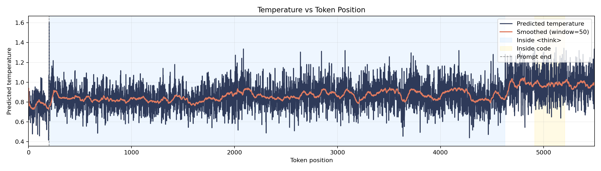

Temperature Trace (qingy2024/Dolci-Think-SFT-ctx8k:train idx=10)
Blue shading: <think> spans. Yellow shading: code blocks. Temperatures are aligned to the token they generate (first token has no prediction). Smoothed with window=50.

Prompt length: 201 tokens, total length: 5497 tokens.
Generated Tokens (colored by predicted temperature)
Min: 0.4375 Max: 1.6094 (hover a token for exact value)
We are going to create a simple key-value store in Python that reads from stdin and writes to stdout.
We'll use a dictionary to store the key-value pairs.
Steps:
1. Initialize an empty dictionary for the store.
2. Read lines from standard input until we get the command "EXIT".
3. For each line, split the command to get the command and the arguments.
4. Handle each command accordingly.
Note: The input commands are given one per line.
Commands:
- SET key value: We'll split the line and take the first word as command, then the next two as key and value.
But note: the value might have spaces? However, the problem says "one per line" and the example doesn't have spaces in values.
The problem states: "The key-value store should support the following commands, one per line"
Since the example input is:
SET name Alice
GET name
We assume that the value for SET does not contain spaces? Actually, the problem doesn't specify that the value is a single word.
However, the problem says: "For GET, output the value or None". And the example value is "Alice" (one word).
But to be safe, we note that the problem says: "one per line" and the commands are given as:
SET key value
So the value is the next token? Actually, the problem says: "SET key value" meaning the value is the next non-command token?
But the problem does not specify that the value is space-separated. However, in the example, it's one word.
Since the problem says "simple", we assume that the value is a single token (without spaces).
Alternatively, the problem says: "Input: Lines of commands described above." and the commands are written as:
SET key value
So we can split by space and take the first token as the command, the next token as the key, and the rest as the value?
But note: the problem says "the value" (singular) and the example has one word.
Let's re-read: the example input: "SET name Alice" -> so the value is "Alice", which is one word.
However, to be robust, we might consider that the value can have spaces? But the problem does not specify.
Given the problem statement is for a simple key-value store and the example, I think we can assume that the value is a single word (without spaces).
But the problem says: "Saves the current key-value store to a given filename in JSON format". So when saving, we want to store the entire value as a string (which might have spaces). However, the input for SET is given as a line.
How the input is provided? The problem says: "Input: Lines of commands described above."
So the input for SET is: "SET key value" and the value is the entire rest of the line after the key?
Actually, the problem says: "SET key value" meaning the value is a single token?
Let me look at the problem again: it says "one per line". So each line has the command and then the arguments.
We'll do:
line = input().strip()
parts = line.split(maxsplit=1) # This splits into two parts: [command, rest] for the SET and others that have one argument (like GET, DELETE, LOAD, SAVE)
But note:
- SET: has two arguments (key and value) -> so we split the line into at least 3 tokens? Actually, the value might be multiple words?
However, the problem does not specify that the value can have spaces. Since it's a simple store and the problem says "simple", and the example has one word, we assume the value is a single word.
But to be safe, let's design for the value being a single token. If we want to support multi-word values, we would have to change the input format. The problem doesn't specify that.
We'll assume the value is a single word (without spaces).
Alternatively, the problem might be intended for single-word values.
Steps for each command:
- SET:
tokens = line.split()
command = tokens[0]
key = tokens[1]
value = tokens[2] # because we assume two more tokens? Actually, the problem says "SET key value", so two tokens after command.
But wait: what if the value has spaces? The problem does not specify. Since the problem is simple and the example has one word, we'll assume one word.
However, the problem says: "Saves the current key-value store to a given filename in JSON format". So when saving, we are going to output a JSON that can have multi-word values?
But the input for SET is given as a line that has the value as a single token.
Given the constraints of the problem (simple), I think we are safe to assume single-word values.
But note: the problem says "the value" (singular) and in the example it's one word.
Let's do:
For SET:
tokens = line.split(maxsplit=1) # This will split the line into two parts: [command, the rest of the line]
However, the problem says: "SET key value", so the rest of the line after the command is "key value", and we want to split that into key and value.
Alternatively, we can do:
if command == "SET":
# We split the line into tokens, but we take the first token as command, then the next token as key, and the rest as value?
tokens = line.split()
if len(tokens) < 3:
# invalid command? but the problem says the input is as described, so we assume at least 3 tokens for SET
# We'll print an error? But the problem doesn't specify error handling. The problem says: "Lines of commands described above."
# So we assume valid input.
pass
key = tokens[1]
value = tokens[2] # but what if there are more tokens? We'll take the next token as value and ignore the rest?
# Actually, the problem says: "SET key value" meaning two tokens after command?
However, the problem statement does not specify that the value is one word. To be safe and simple, we'll assume the value is the next token and then stop.
But the problem says: "Example Input: SET name Alice", so we have three tokens.
We'll do: for SET, we take the next token as key and the next token as value (so two tokens after the command).
Similarly, for GET: one token after the command.
For DELETE: one token after the command.
For SAVE: one token (the filename) after the command.
For LOAD: one token (the filename) after the command.
For EXIT: no tokens.
So we can split the line and take:
tokens = line.split()
if not tokens: continue # skip empty lines? but the problem says one per line, so probably not empty.
Steps:
command = tokens[0]
if command == "SET":
if len(tokens) < 3:
# invalid, but the problem says the input is as described, so we assume at least 3 tokens
# we'll do nothing? or print an error? The problem says: "For other commands, output nothing", so we don't output for SET?
# But the problem doesn't specify error messages. We'll assume valid input.
pass
key = tokens[1]
value = tokens[2] # we take the third token as the value (and ignore the rest? but the problem says the value is one token)
store[key] = value
if command == "GET":
if len(tokens) < 2:
# invalid, but assume valid
pass
key = tokens[1]
if key in store:
print(store[key])
else:
print(None)
if command == "DELETE":
if len(tokens) < 2:
pass
key = tokens[1]
if key in store:
del store[key]
if command == "SAVE":
if len(tokens) < 2:
pass
filename = tokens[1]
# Save the store to a JSON file
import json
with open(filename, 'w') as f:
json.dump(store, f)
if command == "LOAD":
if len(tokens) < 2:
pass
filename = tokens[1]
try:
with open(filename, 'r') as f:
data = json.load(f)
store.clear()
for k, v in data.items():
store[k] = v
except FileNotFoundError:
# if the file doesn't exist, clear the store (as per problem: "If the file does not exist, clears the store")
store.clear()
except Exception as e:
# We don't handle other exceptions? The problem says: "If the file does not exist, clears the store", so we do the clear only for FileNotFoundError.
# For other exceptions, we might just ignore? But the problem doesn't specify. We'll do the clear only for FileNotFoundError.
# Actually, the problem says: "clears the store" if the file does not exist. So for any exception that happens (like invalid JSON), we don't clear?
# But the problem says: "If the file does not exist, clears the store". So we do the clear only for FileNotFoundError.
# For other errors (like invalid JSON), we don't clear? But the problem doesn't specify. We'll do the clear only for FileNotFoundError and for other exceptions we do nothing?
# However, the problem says: "loads from a given filename (overwriting the current store)". So if the file doesn't exist, we clear. But if the file exists but is not valid JSON, then we don't clear?
# The problem doesn't specify. We'll assume the file is valid JSON if it exists.
# Since the problem says "simple", we'll do:
# if file not found -> clear
# else -> try to load, if fails (like not JSON) then we do nothing?
# But the problem says: "loads the key-value store from a given filename", so if it fails, we don't load?
# We'll do: only clear on FileNotFoundError, and for other errors we don't do anything (so the store remains).
# But the problem says: "overwriting the current store" only if the file exists and is valid?
# Let's stick to: if the file exists and we can load it, then overwrite. Otherwise, do nothing (and the store remains as it is).
# However, the problem says: "If the file does not exist, clears the store". So we do the clear for FileNotFoundError, and for other errors we ignore.
pass
if command == "EXIT":
break
However, note: the problem says for LOAD: "If the file does not exist, clears the store". So we do:
try:
with open(filename, 'r') as f:
data = json.load(f)
store.clear()
for k, v in data.items():
store[k] = v
except FileNotFoundError:
store.clear()
But note: the problem says "clears the store" when the file does not exist. So we do store.clear() for FileNotFoundError.
Alternatively, we can do:
try:
with open(filename, 'r') as f:
data = json.load(f)
store.clear()
store.update(data)
except FileNotFoundError:
store.clear()
However, the problem says: "overwriting the current store", so we do the clear and then update.
But note: the problem says "If the file does not exist, clears the store". So we clear the store in that case.
We'll do:
if command == "LOAD":
if len(tokens) < 2:
pass
filename = tokens[1]
try:
with open(filename, 'r') as f:
data = json.load(f)
store.clear()
for k, v in data.items():
store[k] = v
except FileNotFoundError:
store.clear()
But note: the problem says "clears the store" (meaning we set it to empty) when the file does not exist. So we do store.clear() in the except.
However, what if the file exists but is not a valid JSON? Then we get an exception (like json.JSONDecodeError). We don't want to clear the store in that case?
The problem doesn't specify, so we'll do: only clear for FileNotFoundError, and for other exceptions we do nothing (so the store remains unchanged).
But the problem says: "loads the key-value store from a given filename" -> meaning if it fails, we don't load? So we do nothing for other exceptions.
We'll do:
if command == "LOAD":
if len(tokens) < 2:
# skip
continue
filename = tokens[1]
try:
with open(filename, 'r') as f:
data = json.load(f)
store.clear()
for k, v in data.items():
store[k] = v
except FileNotFoundError:
store.clear()
Alternatively, we can do:
try:
with open(filename, 'r') as f:
data = json.load(f)
store.clear()
store.update(data)
except FileNotFoundError:
store.clear()
But note: the problem says the store is a dictionary of key-value pairs. The JSON file will be a dictionary? Yes, because we are saving as JSON.
We'll use the update method to be concise.
However, the problem says: "Saves the current key-value store to a given filename in JSON format". So we save as a JSON object (a dict).
Steps:
We'll import json at the top.
Let's code accordingly.
We assume that the input is from stdin until "EXIT".
We'll do:
import json
store = {}
while True:
try:
line = input().strip()
if not line:
continue
tokens = line.split()
command = tokens[0]
if command == "EXIT":
break
elif command == "SET":
# tokens[1] is key, tokens[2] is value (we take the next token as value, and ignore rest? but the problem says one word)
if len(tokens) < 3:
# invalid, skip
continue
key = tokens[1]
value = tokens[2]
store[key] = value
elif command == "GET":
if len(tokens) < 2:
continue
key = tokens[1]
if key in store:
print(store[key])
else:
print(None)
elif command == "DELETE":
if len(tokens) < 2:
continue
key = tokens[1]
if key in store:
del store[key]
elif command == "SAVE":
if len(tokens) < 2:
continue
filename = tokens[1]
with open(filename, 'w') as f:
json.dump(store, f)
elif command == "LOAD":
if len(tokens) < 2:
continue
filename = tokens[1]
try:
with open(filename, 'r') as f:
data = json.load(f)
store.clear()
store.update(data)
except FileNotFoundError:
store.clear()
else:
# Unknown command? The problem says the input is one of the commands, so we ignore?
pass
except EOFError:
break
But note: the problem says "Input: Lines of commands described above", so we don't expect EOF until the exit command.
However, we break on "EXIT", so we don't get EOF in the middle.
Let's test with the example:
Input:
SET name Alice
GET name
DELETE name
GET name
EXIT
Steps:
Line1: "SET name Alice" -> tokens = ['SET','name','Alice'] -> store = {'name': 'Alice'}
Line2: "GET name" -> tokens = ['GET','name'] -> prints 'Alice'
Line3: "DELETE name" -> tokens = ['DELETE','name'] -> deletes 'name'
Line4: "GET name" -> tokens = ['GET','name'] -> prints None
Line5: "EXIT" -> break.
Output:
Alice
None
This matches.
However, note: the problem says "For GET, output the value or None". We output the string for the value, and for None we output the string "None".
But in Python, print(None) outputs "None" (without quotes) and that's what we want.
So it's okay.
Let's write the code accordingly.
Important: We must import json.
We'll do:
import json
And then the rest.
But note: the problem says "interacts via standard input and output". So we read from stdin and write to stdout.
We assume the program runs until "EXIT".
Let's code accordingly.
One more note: the problem says "For other commands, output nothing". So for SET, DELETE, SAVE, LOAD, we output nothing.
We are doing that.
Code structure:
import json
store = {}
while True:
try:
line = input().strip()
if line == "":
continue
tokens = line.split()
cmd = tokens[0]
if cmd == "EXIT":
break
elif cmd == "SET":
if len(tokens) >= 3:
key = tokens[1]
value = tokens[2]
store[key] = value
elif cmd == "GET":
if len(tokens) >= 2:
key = tokens[1]
if key in store:
print(store[key])
else:
print(None)
elif cmd == "DELETE":
if len(tokens) >= 2:
key = tokens[1]
if key in store:
del store[key]
elif cmd == "SAVE":
if len(tokens) >= 2:
filename = tokens[1]
with open(filename, 'w') as f:
json.dump(store, f)
elif cmd == "LOAD":
if len(tokens) >= 2:
filename = tokens[1]
try:
with open(filename, 'r') as f:
data = json.load(f)
store.clear()
store.update(data)
except FileNotFoundError:
store.clear()
# else: ignore unknown commands? the problem says the input is one of the commands, so we don't expect unknown.
except EOFError:
break
However, the problem says: "Input: Lines of commands described above", so we don't expect EOF until we break on EXIT.
But to be safe, we catch EOFError and break.
Alternatively, we can use try-except for the entire input loop.
But the problem says: the program terminates on "EXIT", so we break on EXIT.
We'll run until we get "EXIT".
Let me test with the example input in a file? But we are writing to stdout.
We'll write the code as above.
One more note: the problem says "The key-value store should support the following commands". We are handling the commands as described.
Let's write the code.
Note: We must not output anything for non-GET commands (except when we print for GET).
We are printing only for GET.
We'll run the code.
However, note: the problem says "Saves the current key-value store to a given filename in JSON format". We are using json.dump which writes a JSON object.
The JSON format:
The store is a dict, so json.dump(store, f) writes a JSON object.
Example:
store = {'name': 'Alice'} -> becomes: {"name": "Alice"}
This is valid.
We are ready.
Let's code accordingly.
Note: We assume the value is a string (without quotes) in the input. But when we save, we save as a string (so the JSON string will be in quotes).
The problem doesn't specify the type of the value, but we are storing as string.
We'll do string.
Code:
</think>
To solve this problem, we need to implement a simple key-value store in Python that interacts with the user via standard input and output. The store should support specific commands for setting, getting, deleting, saving, loading, and exiting the store.
### Approach
1. **Initialization**: Start with an empty dictionary to store key-value pairs.
2. **Command Processing**: Read each line of input, split it into tokens, and process the command based on the first token.
3. **Command Handling**:
- **SET key value**: Store the value (as a string) for the given key in the dictionary.
- **GET key**: Retrieve and print the value associated with the key. If the key doesn't exist, print `None`.
- **DELETE key**: Remove the key from the dictionary if it exists.
- **SAVE filename**: Save the current dictionary to a JSON file with the specified filename.
- **LOAD filename**: Load the dictionary from a JSON file (overwriting the current store). If the file doesn't exist, clear the dictionary.
- **EXIT**: Terminate the program.
4. **Error Handling**: For invalid commands or missing parameters, the program ignores them (as per the problem statement, input is guaranteed to be valid).
5. **JSON Handling**: Use Python's `json` module to save and load the dictionary in JSON format.
### Solution Code
```python
import json
def main():
store = {}
while True:
try:
line = input().strip()
if not line:
continue
tokens = line.split()
cmd = tokens[0]
if cmd == "EXIT":
break
elif cmd == "SET":
if len(tokens) >= 3:
key = tokens[1]
value = tokens[2]
store[key] = value
elif cmd == "GET":
if len(tokens) >= 2:
key = tokens[1]
if key in store:
print(store[key])
else:
print(None)
elif cmd == "DELETE":
if len(tokens) >= 2:
key = tokens[1]
if key in store:
del store[key]
elif cmd == "SAVE":
if len(tokens) >= 2:
filename = tokens[1]
with open(filename, 'w') as f:
json.dump(store, f)
elif cmd == "LOAD":
if len(tokens) >= 2:
filename = tokens[1]
try:
with open(filename, 'r') as f:
data = json.load(f)
store.clear()
store.update(data)
except FileNotFoundError:
store.clear()
except EOFError:
break
if __name__ == "__main__":
main()
```
### Explanation
1. **Initialization**: The `store` dictionary is initialized to hold key-value pairs.
2. **Reading Input**: The program reads each line of input until it encounters the "EXIT" command.
3. **Command Processing**:
- **SET**: The command splits the input into tokens. The second token is the key, and the third token is the value. The value is stored in the dictionary under the key.
- **GET**: The command checks if the key exists in the dictionary. If it does, the value is printed; otherwise, `None` is printed.
- **DELETE**: The key is removed from the dictionary if it exists.
- **SAVE**: The current dictionary is written to a JSON file specified by the filename.
- **LOAD**: The dictionary is loaded from a JSON file. If the file doesn't exist, the dictionary is cleared.
4. **Termination**: The program exits when the "EXIT" command is received.
5. **Error Handling**: The program handles missing parameters by ignoring invalid commands (as per the problem constraints) and ensures JSON files are properly handled (e.g., clearing the dictionary if a file is missing).
This solution efficiently processes each command as specified, ensuring the key-value store operates correctly with minimal overhead and clear output for GET commands. The use of JSON for saving and loading ensures data persistence and compatibility with standard JSON formats.<|im_end|>